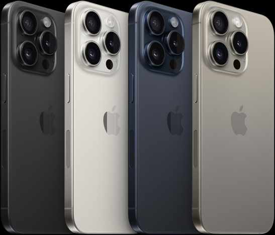

iPhone 15 Pro Review

Source: AppleWelcome to my in-depth review of the iPhone 15 Pro, Apple's latest flagship that's capturing attention worldwide. In my analysis, I delve deep into the five cornerstone elements that define a smartphone's prowess. Join me as I unravel the intricacies of its build quality, marvel at the display's brilliance, gauge its unmatched performance, capture moments through its state-of-the-art camera, and test the resilience of its battery. Discover if the iPhone 15 Pro truly stands out in the ever-evolving realm of smartphones.
Stronger, Lighter and Ergonomic
Reinventing Craftsmanship with Titanium From its inception, Apple has consistently pushed the boundaries in marrying design aesthetics with top-notch materials. With the iPhone 15 Pro, Apple has once again elevated the build quality game in the smartphone industry. For the first time in iPhone history, they have integrated aerospace-grade titanium into the device's construction, a material previously reserved for the rigors of space missions to planets like Mars. When you hear "aerospace-grade," you might wonder what sets it apart. This specific grade of titanium is renowned for its remarkable strength-to-weight ratio, setting it apart from other metals commonly used in the consumer electronics sector. The promise it brings is a phone that is not just robust and resistant to wear and tear but also lighter in weight. Apple claims this is their "lightest Pro models ever," and when you get your hands on the iPhone 15 Pro, the distinction in heft and sturdiness is palpable. Moreover, this isn't just about the material change for the sake of novelty. Titanium offers significant durability benefits, especially for a device that's constantly in use and exposed to the rigors of daily life. The inherent strength of titanium ensures that the iPhone 15 Pro can withstand accidental drops and dings with better resilience, potentially reducing those heart-stopping moments for users when their precious phone slips out of their grasp.
Fluid and responsive
The iPhone 15 Pro's display is nothing short of groundbreaking. With its ProMotion LTPO technology, users get an incredibly fluid experience, with refresh rates that can soar up to 120Hz. This ensures that everything from scrolling through web pages to gaming feels buttery smooth. But what truly sets it apart is its ability to dial down to a refresh rate of just 1Hz when static, thereby significantly conserving battery life. The dynamic island feature is another innovative addition, enhancing the user's interaction with the display in ways we've never seen before. The adaptive nature of the display, adjusting not just based on content but also based on the environment and user interaction, sets a new gold standard in smartphone displays.
A snappy monster
The iPhone 15 Pro, powered by the revolutionary A17 Pro chip, is truly a game-changer in the realm of mobile performance. Its graphics capabilities are unparalleled, ensuring mobile gaming experiences that are immersive and incredibly detailed. Environments are richly rendered, and characters have never looked more realistic on a smartphone screen. Beyond the enhanced visual appeal, the A17 Pro's industry-leading speed and efficiency redefine what one can expect from a mobile device. This isn't just about faster app launches or smoother UI transitions; the iPhone 15 Pro is now in the league of consoles, capable of handling games with advanced ray tracing and Metal FX upscaling. Such features were once reserved for dedicated gaming systems, but Apple has blurred the lines between console and mobile gaming.
Capture What your eyes see
0.5x
The wide-angle camera has always been a favorite for landscape and architecture enthusiasts, but with its new macro shooting capabilities, the iPhone 15 Pro has further broadened its appeal. The ability to capture detailed macro shots transforms everyday objects into fascinating subjects. From the intricate patterns on leaves to the delicate textures of fabrics, the macro capability is a delightful feature for those who appreciate the smaller details in life.
1.0x
With the introduction of the 48MP main lens, the iPhone 15 Pro takes clarity and detail to a whole new level. Every image shot with this lens reveals intricate details, and the improvement is especially noticeable in challenging lighting conditions. The prowess of this lens in low-light environments is astounding. Nighttime photos are clearer, with reduced noise and better color accuracy. Shadows and highlights are beautifully balanced, making for some truly Instagram-worthy shots.
5.0x
One of the most notable additions is the 5x telephoto lens. This lens allows users to zoom in closer to subjects without sacrificing image clarity. Whether you're capturing distant landscapes or trying to get a close-up shot in a crowded space, this lens offers versatility that was previously unmatched in prior models.
Battery that lasts
 Source: Medium
Source: Medium
Get yourself the iPhone 15 Pro in Sydney
The iPhone 15 Pro is available at all Apple stores in Sydney. Click on the markers to find out more about each store.